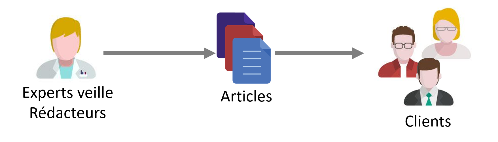
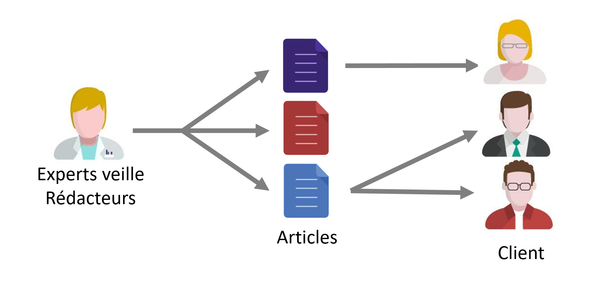
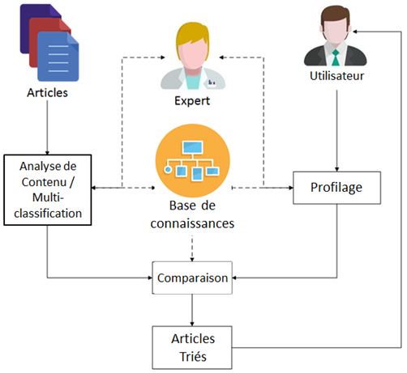

OnTAL - Recommandation de nouvelles économiques¶
Contexte¶
Le projet s’inscrit dans la thèse de David Werner dont la réflexion est menée sur les enjeux et problématiques de la veille économique et commerciale. Ce projet a été en collaboration avec une entreprise partenaire spécialisée qui a permis le financement d’une thèse CIFRE ainsi que la naissance du projet OnTAL. Le résultat de recherche et de valorisation se concrétise par la comemrcialisation de la solution First Eco Pro'Fil.
Le processus de prise de décision dans le domaine économique nécessite la centralisation et l’apport de grandes quantités d’informations. L’objectif est de rester en phase avec les tendances actuelles du marché. Pour cela, les hommes d’affaires, les entrepreneurs et les vendeurs doivent parfaitement connaitre leur environnement. Cela signifie qu’il faut être continuellement à jour en matière d’information pour connaitre les projets en cours de développement. Avec l’aide de la veille économique, les perspectives d’affaires peuvent être plus facilement identifiées, dans l’objectif de décrocher de nouveaux contrats. Notre outil est spécialisé dans la production et la distribution de revues de presse régionales françaises d’actualités économiques. Afin de réduire la surcharge d’information, nous nous acheminons vers la production d’une revue personnalisée pour chaque utilisateur. Pour atteindre cet objectif, un système de recommandation basé sur le contenu a été élaboré. Le système de recommandation permet le classement des articles publiés en fonction de leur degré de pertinence pour l’utilisateur. Les résultats de l’analyse du contenu de chaque article permettent de faire le lien avec la connaissance du domaine modélisé dans une ontologie. Car les connaissances du domaine peuvent être réutilisées afin d’améliorer la tâche de recommandation.
Au début du projet, les documentalistes produisaient une revue par région géographique.

A la fin du projet, l'entreprise produise une revue par client après profilage.

Recherche et objectifs¶
Ce projet avait pour objectif l’utilisation de technologies provenant des domaines du traitement automatisé du langage naturel ainsi que de la modélisation des connaissances à l’aide d’ontologies afin d’améliorer la recommandation de nouvelles économiques. Le projet comprend une réflexion globale ainsi que sur différentes tâches de l’architecture :
- Analyse du contenu des articles de nouvelles économiques pour indexation de l’information ;
- Analyse du besoin d’information des utilisateurs ;
- Génération automatique de revues personnalisées, correspondant aux besoins d’information économique des clients du service.
Cet outil de recommandation permet de personnaliser et donc de faciliter la veille économique et commerciale de ses utilisateurs.
Architecture¶
Notre système est un système guidé par une ontologie et basé sur le contenu. Un schéma d’ontologie a été défini et peuplé avec l’aide d’experts, afin de modéliser les connaissances du domaine dans une base de connaissances. Dans un système classique de recommandation basé sur le contenu, on distingue deux tâches principales. La première est l’indexation. La tâche consiste à créer une représentation des besoins des utilisateurs et du contenu des articles. La qualité de l’analyse du contenu est importante pour la qualité de l’indexation. Ainsi, notre système est semi-supervisé par un expert, afin d’éviter autant que possible des erreurs d’indexation. La deuxième tâche est la comparaison. La comparaison des modélisations d’articles et de profils afin de mesurer le degré de pertinence de l’un par rapport à l’autre. Les articles sont triés ou filtrés à l’aide de ces mesures de pertinence, avant d’être fournis à l’utilisateur.

Publications¶
Article dans une revue
- David Werner, Christophe Cruz. Precision difference management using a common sub-vector to extend the extended VSM method. Procedia Computer Science, Elsevier, 2013, Volume 18, pp.1179 - 1188. 10.1016/j.procs.2013.05.284
Chapitre d'ouvrage
- David Werner, Christophe Cruz, Aurélie Bertaux, Nuno Silva. An Ontology-Based Recommender System using Hierarchical Multiclassification for Economical e-News. Studies in Computational Intelligence, Springer book series, 2014.
Communication dans un congrès
- David Werner, Nuno Silva, Christophe Cruz, Aurélie Bertaux. AN ONTOLOGY-BASED RECOMMENDER SYSTEM USING HIERARCHICAL MULTICLASSIFICATION FOR ECONOMICAL E-NEWS. IE, The 14th International Conference on Informatics in Economy,, May 2014, Bucharest, Romania. 2014, Proceedings of the IE 2014 International Conference.
- David Werner, Christophe Cruz, Aurélie Bertaux. Evaluation de la pertinence dans un système de recommandation sémantique de nouvelles économiques. EGC - Fouille de données complexes, May 2014, Rennes, France. 2014, EGC - Fouille de données complexes.
- Hassan Thomas, David Werner, Aurélie Bertaux, Christophe Cruz. PROFILE REFINEMENT IN ONTOLOGY-BASED RECOMMANDER SYSTEMS FOR ECONOMICAL E-NEWS. IE, The 14th International Conference on Informatics in Economy, May 2014, Bucharrest, Romania. 2014.
- David Werner, Nuno Silva, Christophe Cruz, Aurélie Bertaux. An Ontology-Based Recommender System using Hierarchical Multiclassification for Economical e-News. Science and Information Conference, Aug 2014, Londres, United Kingdom. IEEE/Springer, 2014.
- David Werner, Christophe Cruz. A Method to Manage the Precision Difference between Items and Profiles. SITIS, International Conference on Signal-Image Technology & Internet-Based Systems, 2013, Dec 2013, kyoto, Japan. IEEE, pp.337 - 344, 2013, 2013 International Conference on Signal-Image Technology & Internet-Based Systems (SITIS),. http://ieeexplore.ieee.org/xpl/articleDetails.jsp?arnumber=6727211.
- David Werner, Christophe Cruz. A Method to Manage the Difference of Precision between Profiles and Items for Recommender System. The methode is applied Upon a News Recommender System using VSM Approach. Webist 2013, the 9th International Conference on Web Information Systems and Technologies, May 2013, aachen, Germany. pp.465-470, 2013.
- David Werner, Christophe Cruz, Christophe Nicolle. Ontology-based Recommender System of Economic Articles. 8th International Conference on Web Information Systems and Technologies, Apr 2012, Porto, Portugal. pp.ISBN 978-989-8565-08-2, 2012.
Poster
- David Werner, Christophe Cruz, Aurélie Bertaux. Extraction de la Valeur des données du Big Data par classification multi-label hiérarchique sémantique. Extraction et Gestion de la Connaissance - Atelier Fouille de Données Complexes, Jan 2015, Luxembourg, Luxembourg.
- David Werner, Christophe Cruz, Aurélie Bertaux. Evaluation de la pertinence dans un système de recommandation sémantique de nouvelles économiques. Extraction et Gestion des Connaissances, Jan 2014, Rennes, France. RNTI-E-26, pp.549 - 552, 2014, http://editions-rnti.fr/?inprocid=1001976.